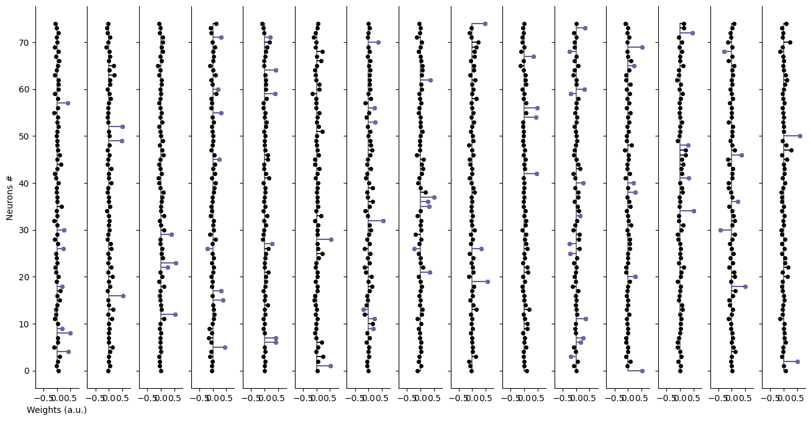
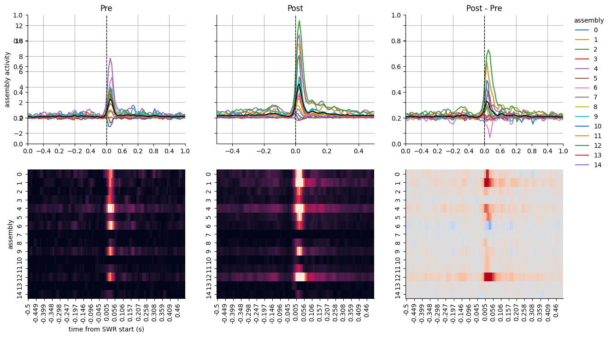
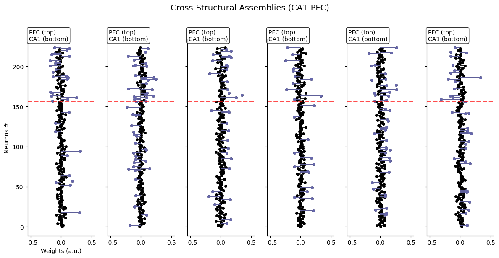
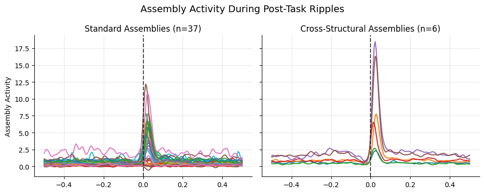
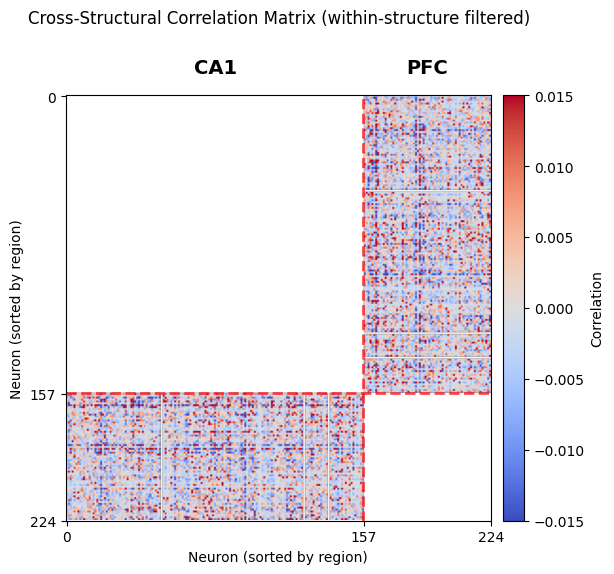

Reactivation¶
Here, we will show how to use the AssemblyReact
class to identify assemblies and assess reactivation during post-task sleep
Setup¶
%reload_ext autoreload
%autoreload 2
# from neuro_py
# plotting
import matplotlib.pyplot as plt
# core tools
import nelpy as nel
import numpy as np
import seaborn as sns
from neuro_py.ensemble.assembly_reactivation import AssemblyReact
from neuro_py.io import loading
from neuro_py.process.peri_event import event_triggered_average_fast
import neuro_py as npy
Section 1: Pick basepath and initialize AssemblyReact class¶
Here we will use CA1 pyramidal cells.
basepath = r"S:\data\HMC\HMC1\day8"
assembly_react = AssemblyReact(
basepath=basepath,
brainRegion="CA1",
putativeCellType="Pyr",
z_mat_dt=0.01,
)
Also, load brain states for later use.
# load theta epochs
state_dict = loading.load_SleepState_states(basepath)
theta_epochs = nel.EpochArray(
state_dict["THETA"],
)
nrem_epochs = nel.EpochArray(
state_dict["NREMstate"],
)
theta_epochs, nrem_epochs
(<EpochArray at 0x1bf19b9eb10: 125 epochs> of length 35:04 minutes,
<EpochArray at 0x1c039ca4050: 88 epochs> of length 2:16:25 hours)
Section 2: Load spike data, session epochs, and ripple events¶
You can see there there are nice printouts that display important information about the class
# load need data (spikes, ripples, epochs)
assembly_react.load_data()
assembly_react
<AssemblyReact: 75 units> of length 6:36:57:689 hours
Locate the session from which you want to detect assemblies.
Here we can see a novel linear track is the second epoch.
assembly_react.epoch_df
| name | startTime | stopTime | environment | behavioralParadigm | notes | manipulation | stimuli | basepath | |
|---|---|---|---|---|---|---|---|---|---|
| 0 | preSleep_210411_064951 | 0.0 | 9544.56315 | sleep | NaN | NaN | NaN | NaN | S:\data\HMC\HMC1\day8 |
| 1 | maze_210411_095201 | 9544.5632 | 11752.80635 | linear | 1 | novel | NaN | NaN | S:\data\HMC\HMC1\day8 |
| 2 | postSleep_210411_103522 | 11752.8064 | 23817.68955 | sleep | NaN | NaN | NaN | NaN | S:\data\HMC\HMC1\day8 |
Section 3: Detect assembles in linear track during theta¶
You can see we have detected 15 assemblies
assembly_react.get_weights(epoch=assembly_react.epochs[1] & theta_epochs)
assembly_react
<AssemblyReact: 75 units, 15 assemblies> of length 6:36:57:689 hours
Section 4: Analyze the obtained assemblies¶
Section 4.1: Visualize assembly weights¶
Each column is a assembly and each row is a cell
The color indicates if the cell was a significant contributor (members) to that assembly * you can find these members with assembly_members = assembly_react.find_members()
assembly_react.plot()
plt.show()

Section 4.2: Compute time-resolved activations for each assembly¶
Will take around a minute to run.
assembly_act = assembly_react.get_assembly_act()
assembly_act
<AnalogSignalArray at 0x1bf177a3c90: 15 signals> for a total of 6:36:57:680 hours
Section 4.3: Get assembly strengths around ripples in pre-sleep, the task, and in post-sleep epochs¶
nrem_ripples = assembly_react.ripples & nrem_epochs
psth_swr_pre = event_triggered_average_fast(
assembly_act.data,
nrem_ripples[assembly_react.epochs[0]].starts,
sampling_rate=assembly_act.fs,
window=[-0.5, 0.5],
return_average=True,
return_pandas=True,
)
psth_swr_task = event_triggered_average_fast(
assembly_act.data,
assembly_react.ripples[assembly_react.epochs[1]].starts,
sampling_rate=assembly_act.fs,
window=[-0.5, 0.5],
return_average=True,
return_pandas=True,
)
psth_swr_post = event_triggered_average_fast(
assembly_act.data,
nrem_ripples[assembly_react.epochs[2]].starts,
sampling_rate=assembly_act.fs,
window=[-0.5, 0.5],
return_average=True,
return_pandas=True,
)
# round time index to 3 decimals for plotting
psth_swr_pre.index = np.round(psth_swr_pre.index, 3)
psth_swr_task.index = np.round(psth_swr_task.index, 3)
psth_swr_post.index = np.round(psth_swr_post.index, 3)
Section 4.4: Visualize reactivation dynamics during post-task ripples¶
Here, we have plotted Pre, Post, and Post subtracted by Pre to estimate the difference.
You can see that many of the assembles have a higher reactivation during the post-task ripples compared to the pre-task ripples.
fig, ax = plt.subplots(2, 3, figsize=(15, 8), sharey=False, sharex=False)
ax = ax.flatten()
# share y axis of first row
ax[0] = plt.subplot(231, sharey=ax[1])
ax[2] = plt.subplot(233, sharey=ax[0])
# plot assembly ripple psth
psth_swr_pre.plot(ax=ax[0], legend=False)
psth_swr_post.plot(ax=ax[1], legend=False)
(psth_swr_post - psth_swr_pre).plot(ax=ax[2])
# plot mean assembly ripple psth
psth_swr_pre.mean(axis=1).plot(ax=ax[0], color="k", legend=False)
psth_swr_post.mean(axis=1).plot(ax=ax[1], color="k", legend=False)
(psth_swr_post - psth_swr_pre).mean(axis=1).plot(ax=ax[2], color="k")
# plot assembly ripple psth heatmap
sns.heatmap(psth_swr_pre.T, ax=ax[3], cbar=False, vmin=0, vmax=5)
sns.heatmap(psth_swr_post.T, ax=ax[4], cbar=False, vmin=0, vmax=5)
sns.heatmap(
(psth_swr_post - psth_swr_pre).T,
ax=ax[5],
cbar=False,
vmin=-5,
vmax=5,
cmap="coolwarm",
)
for ax_ in ax[:3]:
# dashed line at zero
ax_.axvline(0, linestyle="--", color="k", linewidth=1)
# set x axis limits
ax_.set_xlim(-0.5, 0.5)
# add grid lines
ax_.grid()
ax[0].set_title("Pre")
ax[1].set_title("Post")
ax[2].set_title("Post - Pre")
# move legend
ax[2].legend(
bbox_to_anchor=(1.05, 1), loc=2, borderaxespad=0.0, frameon=False, title="assembly"
)
# add labels
ax[0].set_ylabel("assembly activity")
ax[3].set_ylabel("assembly")
ax[3].set_xlabel("time from SWR start (s)")
# clean axis using seaborn
sns.despine()
plt.show()

Section 5: Cross-Structural Assembly Detection¶
The AssemblyReact class now supports cross-structural assembly detection, which allows you to identify assemblies that span across different brain regions, cell types, or any other categorical grouping. This is particularly useful for studying cross-regional coordination.
Section 5.1: Load data from multiple brain regions¶
For this demonstration, we'll detect assemblies that span across CA1 and PFC regions.
basepath = r"U:\data\hpc_ctx_project\HP18\hp18_day40_20250514"
# load theta epochs
state_dict = loading.load_SleepState_states(basepath)
theta_epochs = nel.EpochArray(
state_dict["THETA"],
)
nrem_epochs = nel.EpochArray(
state_dict["NREMstate"],
)
ripples = npy.io.load_ripples_events(basepath, return_epoch_array=True)
epoch_df = loading.load_epoch(basepath)
epoch_df = npy.session.compress_repeated_epochs(epoch_df)
beh_epochs = nel.EpochArray(np.array([epoch_df.startTime, epoch_df.stopTime]).T)
pre_task_post = npy.session.find_multitask_pre_post(
epoch_df.environment, post_sleep_flank=True, pre_sleep_common=True
)
# Load spike data from both CA1 and PFC regions
st, cell_metrics = loading.load_spikes(
basepath, brainRegion="CA1|PFC", putativeCellType="Pyr"
)
brain_regions = np.array(["unknown"] * st.n_active)
brain_regions[cell_metrics.brainRegion.str.contains("CA1")] = "CA1"
brain_regions[cell_metrics.brainRegion.str.contains("PFC")] = "PFC"
# sort by brain region for easier visualization
idx = np.argsort(brain_regions)
st._data = st.data[idx]
brain_regions = brain_regions[idx]
cell_metrics = cell_metrics.iloc[idx].reset_index(drop=True)
Section 5.2: Standard vs Cross-Structural Assembly Detection¶
Let's compare standard assembly detection (which finds assemblies within and across regions) with cross-structural detection (which only finds assemblies spanning multiple regions).
# Standard assembly detection (finds both within-region and cross-region assemblies)
assembly_react_standard = AssemblyReact(weight_dt=0.05, z_mat_dt=0.005)
assembly_react_standard.add_st(st)
assembly_react_standard.epochs = beh_epochs
assembly_react_standard.get_weights(
epoch=assembly_react_standard.epochs[pre_task_post[0][1].item()] & theta_epochs
)
print(f"Standard detection found {assembly_react_standard.n_assemblies()} assemblies")
# Cross-structural assembly detection (only finds assemblies spanning multiple regions)
assembly_react_cross = AssemblyReact(
weight_dt=0.05,
z_mat_dt=0.005,
cross_structural=brain_regions, # This enables cross-structural detection
)
assembly_react_cross.add_st(st)
assembly_react_cross.epochs = beh_epochs
assembly_react_cross.get_weights(
epoch=assembly_react_cross.epochs[pre_task_post[0][1].item()] & theta_epochs
)
print(
f"Cross-structural detection found {assembly_react_cross.n_assemblies()} assemblies"
)
Standard detection found 37 assemblies
Cross-structural detection found 6 assemblies
Cross-structural detection found 6 assemblies
Section 5.3: Visualize Cross-Structural Assembly Weights¶
The cross-structural assemblies should show weights in both CA1 and PFC regions. The vertical red line separates the two brain regions.
if assembly_react_cross.n_assemblies() > 0:
# Plot cross-structural assembly weights
fig, axes = assembly_react_cross.plot(figsize=(12, 6))
# Add vertical line to separate brain regions
ca1_neurons = np.sum(brain_regions == "CA1")
for ax in axes.flat:
ax.axhline(
ca1_neurons - 0.5, color="red", linestyle="--", alpha=0.7, linewidth=2
)
ax.text(
0.02,
1.05,
f"PFC (top)\nCA1 (bottom)",
transform=ax.transAxes,
va="top",
ha="left",
bbox=dict(boxstyle="round", facecolor="white", alpha=0.8),
)
plt.suptitle("Cross-Structural Assemblies (CA1-PFC)", fontsize=14, y=1.02)
plt.tight_layout()
plt.show()
# Analyze which regions participate in each assembly
assembly_react_cross.find_members()
print("\n Cross-structural assembly analysis:")
for i in range(assembly_react_cross.n_assemblies()):
ca1_active = assembly_react_cross.assembly_members[i, :ca1_neurons].sum()
pfc_active = assembly_react_cross.assembly_members[i, ca1_neurons:].sum()
print(
f" Assembly {i + 1}: CA1 neurons: {ca1_active}, PFC neurons: {pfc_active}"
)
else:
print("No cross-structural assemblies detected in this dataset.")
print("This could mean:")
print("1. There are no assemblies spanning both regions")
print("2. The assemblies are primarily within-region")
print("3. More data or different parameters may be needed")

Cross-structural assembly analysis:
Assembly 1: CA1 neurons: 10, PFC neurons: 22
Assembly 2: CA1 neurons: 26, PFC neurons: 24
Assembly 3: CA1 neurons: 16, PFC neurons: 15
Assembly 4: CA1 neurons: 14, PFC neurons: 11
Assembly 5: CA1 neurons: 25, PFC neurons: 17
Assembly 6: CA1 neurons: 21, PFC neurons: 14
Section 5.4: Compare Assembly Activity Between Standard and Cross-Structural Detection¶
Let's examine how cross-structural assemblies behave during ripples compared to standard assemblies.
assembly_act_standard = assembly_react_standard.get_assembly_act(
epoch=assembly_react_standard.epochs[pre_task_post[0][2].item()]
)
# Compute assembly activity for cross-structural assemblies
assembly_act_cross = assembly_react_cross.get_assembly_act(
epoch=assembly_react_cross.epochs[pre_task_post[0][2].item()]
)
nrem_ripples = ripples & nrem_epochs
psth_standard_post = npy.process.event_triggered_average(
timestamps=assembly_act_standard.abscissa_vals,
signal=assembly_act_standard.data.T,
events=nrem_ripples[
assembly_react_standard.epochs[pre_task_post[0][2].item()]
].starts,
sampling_rate=assembly_act_standard.fs,
window=[-0.5, 0.5],
return_average=True,
return_pandas=True,
)
psth_cross_post = npy.process.event_triggered_average(
timestamps=assembly_act_cross.abscissa_vals,
signal=assembly_act_cross.data.T,
events=nrem_ripples[assembly_react_cross.epochs[pre_task_post[0][2].item()]].starts,
sampling_rate=assembly_act_cross.fs,
window=[-0.5, 0.5],
return_average=True,
return_pandas=True,
)
# Plot comparison
fig, axes = plt.subplots(1, 2, figsize=(10, 4), sharey=True)
# Plot standard assemblies
psth_standard_post.plot(ax=axes[0], legend=False)
axes[0].legend().set_visible(False)
# axes[0].set_title(f"Standard Assemblies (first {n_compare})")
axes[0].set_ylabel("Assembly Activity")
axes[0].axvline(0, linestyle="--", color="k", alpha=0.7)
axes[0].grid(True, alpha=0.3)
axes[0].set_title(f"Standard Assemblies (n={assembly_react_standard.n_assemblies()})")
# Plot cross-structural assemblies
psth_cross_post.plot(ax=axes[1], legend=False)
axes[1].set_title(
f"Cross-Structural Assemblies (n={assembly_react_cross.n_assemblies()})"
)
axes[1].set_ylabel("Assembly Activity")
axes[1].axvline(0, linestyle="--", color="k", alpha=0.7)
axes[1].grid(True, alpha=0.3)
plt.suptitle("Assembly Activity During Post-Task Ripples", fontsize=14)
plt.tight_layout()
sns.despine()
plt.show()
# Compare peak activation
standard_peak = psth_standard_post.max().mean()
cross_peak = psth_cross_post.max().mean()
print(f"Peak activation comparison:")
print(f"Standard assemblies (mean): {standard_peak:.2f}")
print(f"Cross-structural assemblies (mean): {cross_peak:.2f}")

Peak activation comparison:
Standard assemblies (mean): 3.52
Cross-structural assemblies (mean): 9.00
Section 5.5: Visualizing Cross-Structural Correlation Matrix¶
A crucial step in cross-structural assembly analysis is filtering out within-structure (within-region) correlations. By masking these, we ensure that only interactions between neurons in different regions (e.g., CA1 and PFC) are considered when detecting cross-structural assemblies. This step is what enables the identification of assemblies that truly span multiple structures, rather than being dominated by strong within-region co-activity.
The plot below shows the neuron-neuron correlation matrix with within-region correlations masked out. The vertical red lines mark the region boundaries, and region labels are shown above the matrix for clarity. Only cross-region correlations remain visible, making patterns of inter-regional coordination stand out.
This visualization helps you: - Confirm that the analysis is focused on cross-structural interactions - Inspect the distribution and strength of cross-region correlations - Identify coordinated activity that is not visible within a single region
Assemblies that are truly cross-structural will show strong off-diagonal blocks in this matrix, indicating coordinated activity between regions.
# Visualize cross-structural correlation matrix with within-structure filtered out
# Recompute the z-scored binned spike matrix using the method from AssemblyReact
zmat, _ = assembly_react_cross.get_z_mat(
assembly_react_cross.st[
assembly_react_cross.epochs[pre_task_post[0][1].item()] & theta_epochs
]
)
corr = np.corrcoef(zmat)
# Mask within-structure correlations
region_labels = brain_regions
mask = np.equal.outer(region_labels, region_labels)
corr_masked = corr.copy()
corr_masked[mask] = np.nan # set within-structure to NaN
fig, ax = plt.subplots(figsize=(7, 6))
im = ax.imshow(corr_masked, cmap="coolwarm", vmin=-0.015, vmax=0.015)
# Add lines to separate regions
ca1_neurons = np.sum(brain_regions == "CA1")
ax.axhline(ca1_neurons - 0.5, color="red", linestyle="--", linewidth=2, alpha=0.7)
ax.axvline(ca1_neurons - 0.5, color="red", linestyle="--", linewidth=2, alpha=0.7)
# Axis labels and ticks
ax.set_xlabel("Neuron (sorted by region)")
ax.set_ylabel("Neuron (sorted by region)")
ax.set_xticks([0, ca1_neurons, len(brain_regions)])
ax.set_yticks([0, ca1_neurons, len(brain_regions)])
ax.set_xticklabels(["0", f"{ca1_neurons}", f"{len(brain_regions)}"])
ax.set_yticklabels(["0", f"{ca1_neurons}", f"{len(brain_regions)}"])
# Add region labels using text outside the plot area for visibility
ax.text(
ca1_neurons / 2,
-10,
"CA1",
ha="center",
va="bottom",
fontsize=14,
fontweight="bold",
color="black",
clip_on=False,
)
ax.text(
ca1_neurons + (len(brain_regions) - ca1_neurons) / 2,
-10,
"PFC",
ha="center",
va="bottom",
fontsize=14,
fontweight="bold",
color="black",
clip_on=False,
)
# Add the title above the region annotations by using fig.suptitle
fig.suptitle(
"Cross-Structural Correlation Matrix (within-structure filtered)",
fontsize=12,
y=0.94,
)
# Colorbar
cbar = plt.colorbar(im, ax=ax, label="Correlation", pad=0.02)
plt.tight_layout(rect=[0, 0, 1, 0.93])
plt.show()
C:\Users\Cornell\AppData\Roaming\Python\Python311\site-packages\numpy\lib\_function_base_impl.py:3045: RuntimeWarning: invalid value encountered in divide
C:\Users\Cornell\AppData\Roaming\Python\Python311\site-packages\numpy\lib\_function_base_impl.py:3046: RuntimeWarning: invalid value encountered in divide

Section 5.6: Key Points About Cross-Structural Assembly Detection¶
What it does: - Identifies assemblies that span across different groups (regions, cell types, etc.) - Filters out assemblies that are confined to a single group - Enables study of cross-regional coordination and communication
When to use: - Studying hippocampal-cortical interactions - Examining coordination between brain regions - Investigating cell type-specific assembly dynamics - Analyzing cross-electrode or cross-shank coordination
Parameters:
- cross_structural: A categorical array with the same length as the number of neurons
- Works with both method='ica' and method='pca'
- Compatible with all other AssemblyReact parameters
Important considerations: - Requires sufficient neurons from multiple groups - May detect fewer assemblies than standard detection (by design) - Best used when you have a specific hypothesis about cross-structural coordination